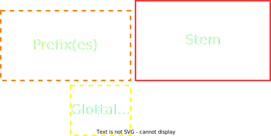
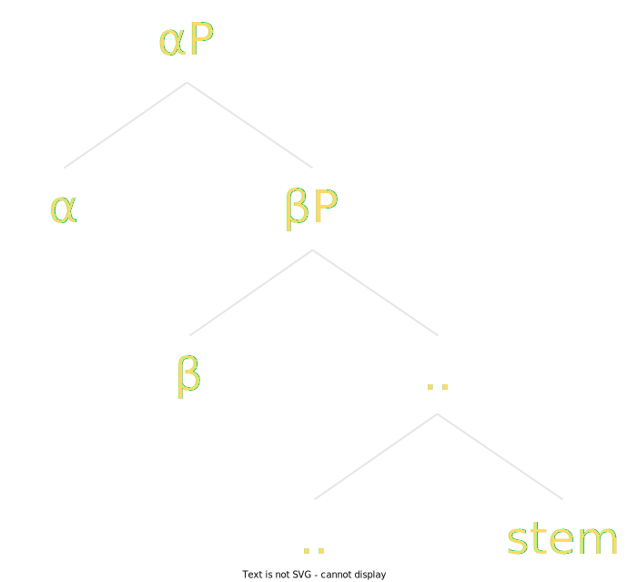

Morphology
Toaq can be described as having opaque lexical morphology and transparent derivational morphology. Toaq is highly analytic, while featuring a productive system of derivational prefixes.
Toaq's morphemes fall into the following broad categories:
• verbs
• function words
• tones
• prefixes
A self-segregating morphology
Toaq has a self-segregating morphology (SSM): Any sequence of phonemes (or in writing, graphemes) can always be broken down into individual morphemes unambiguously. It is always unambiguous where words begin and end, and it is always unambiguous how individual words break down into stem morphemes and derivational morphemes. SSM is a necessary property for a monoparsing language, but it also makes the language easier to learn and to speak, because there is less chance for confusion.
Toaq's SSM algorithm can be described by the following schema:
SSM pattern
words <- (stressed_syllable unstressed_syllable*)+
morphemes <- (prefix+ infix)? stem
* = zero or more
+ = one or more
? = optional
Words are stressed on the first syllable, which means text can be segmented into words by stress alone.
Prefixes and stem are separated by a special infix.
Note that even though stress is enough to detect word boundaries, the contrast is strengthened further by the fact that
• open stressed syllables are longer, and
• tonal contour changes always coincide with stressed syllables.
If a speaker fails to stress the first syllable of a word but retains the tone contour change, the word can still be segmented unambigously.
If a speaker ignores tones but correctly places stress on every word, the text will still only be able to be broken down in a single way, although it might parse differently, since tones are syntactically significant morphemes, and dropping them is unlikely to leave the syntax unaffected. However, a fluent listener would still be able to get the gist most of the time.
A more in-depth description of Toaq word formation follows below.
Word morphology
Word pattern
Dashed lines indicate optional components.
Before delving into derivational morphology, we will look at stem morphology.
Stem morphology
Toaq’s verbs fall into two structural categories: atomic verbs and analytic verbs.
Atomic verbs are lexical entries composed of a single word. They include the roots (e.g. rua "flower", jara "to run"), compounds (e.g. chıetua "to teach", huosı "to listen") and loanwords (e.g. kafe "coffee", elu "elephant").
All stems are atomic verbs.
Analytic verbs are verbs which are syntactically derived from other parts of speech with the help of verbal particles (also known as predicatizers). These can be further divided into subcategories depending on which part of speech is being converted into a verb. Analytic verbs are covered in the chapter on syntax.
Roots
Roots are the monomorphemic building blocks of the lexicon.
The shortest root shape is the monosyllabic CV shape. Examples include: fa "to go", sı "to pay attention", gı "to be good".
There is no upper limit on root length. Some longer roots are: jara "to run", kaqga "to bite", marao "to dance".
Because there is no upper limit on length, Toaq's root space is theoretically infinite.
Compound verbs
Compound verbs are stems which consist of more than one morpheme. The component morphemes can be roots or function words, though they are more frequently the former. Compounding is the primary mechanism by which Toaq’s lexicon can be extended naturally and endlessly.
Compounds are formed by simple juxtaposition:
kue "book" + jıo "building" = kuejıo "library"
nıe "inside" + fa "go" = nıefa "to enter"
Standard compounds are head-final, that is, the most fundamental component comes last and modifying/specifying components precede it. A kuejıo is a type of building, what kind of building? One that has to do with books. nıefa is a type of going, not a kind of being inside.
This means that, if the compound is derived from a serial verb, the order of the serial verb is reversed in the compound:
tua chıe "to make learn" → chıetua "to teach".
Compounding is recursive: a stem formed via compounding can compound with another stem. In practice, compounds with more than three components are rare and are often replaced by shorter roots.
A compound is a single word, and therefore only the first syllable is stressed.
Loanwords
Loanwords are stems that are imported directly from other languages, with the necessary sound changes to make the source word fit Toaq’s phonotactics. Loanwords tend to be specific concepts for which no easy compound is available. Such concepts include animals and plants, anatomical vocabulary, country names, and more.
As loanwords are monomorphemic, they can be considered roots, too.
The following are examples of loanwords:
elu "elephant"
kafe "coffee"
gureq "kidney"
Function words
Function words are words that perform various syntactic functions. They give structure to a sentence and help specify how verbs relate to each other.
Function word morphemes have the same shape as verbal morphemes. They are made up of one or more syllables. Examples include:
túq "all"
mä "whether"
íme "we (excluding the listener)"
Every function word carries a tone. As a rule of thumb, function words which form verbs carry the falling tone, and other function words carry one of the other tones.
The different function word classes are covered in the chapter on syntax.
Derivational morphology
Word pattern
Dashed lines indicate optional components.
Having already covered what stems are, the text now turns to the other things that can be part of a word: prefixes.
Prefixes are bound morphemes which can only occur attached to a stem. Lexically, they occupy their own separate word space, meaning that a hypothetical prefix fa- is definitionally independent from the stem fa. Since the two cannot appear in the same place, this is not a possible source of ambiguity.
When talking about prefixes, they are always written with a hyphen after them to distinguish them from stems. na- is a prefix, na is a stem.
All prefixes are one raku in length.
Examples of possible shapes: na-, buq-, guaı-
Examples of impossible shapes: *nana-, *naqru-, *naımaq-,
The prefix-stem boundary is marked by an infix which is placed "inside" the prefix that immediately precedes the stem. This infix has the same form as the glottal tone, minus the tone. In other words, a glottal stop is inserted inside the first vowel of the final prefix:
| V → VʔV |
In the romanization, this infix is indicated with a dot under the vowel:
| mụjaı |
Everything up to and including the glottalized syllable is a prefix, everything after it the stem.
There is no limit on the number of prefixes that can be attached to a stem.
Prefixes and stem group as follows:
| (α (β (γ .. (ω (stem))..)))  |
The next subsections present a number of example prefixes and prefix families. The coverage is not exhaustive.
Negation prefixes
|
|
bu-
|
"non-X" (neg)
|
|
|
mu-
|
"un-X" (opposite) (opp)
|
chao bụkıa
vehicle *neg*-red
! 'non-red vehicle'
Du mụjaı súq.
seem *opp*-happy *2s*
! 'You seem unhappy.'
Passivizer prefixes
|
|
bo-
|
passive (pass)
|
|
|
te-
|
passive perfect participle (ppf)
|
Bu bọcho jí kúne.
*neg* *pass*-like *1s* the-dog
! 'I'm not liked by the dog.'
tẹhıao
*ppf*-harm
! '(have been) harmed'
Comparative and superlative prefixes
|
|
ha-
|
"more X", "X-er", comparative (cmpr)
|
|
|
su-
|
"most X", "X-est", superlative (sup)
|
hạsao
*cmpr*-large
! 'larger'
sụsao
*sup*-large
! 'largest'
hạgı
*cmpr*-good
! 'better'
sụgı
*sup*-good
! 'best'
Degree prefixes
|
|
ge-
|
diminutive (dim)
|
|
|
buq-
|
augmentative (aug)
|
gẹheqtı
*dim*-duck
! 'duckling'
bụqjoe
*aug*-skilled
! 'super skilled'
Telicity prefixes
|
|
fa-
|
telic (tel)
|
|
|
ruı-
|
atelic (atel)
|
The telic prefix fa- expresses that the action described by the stem heads for a particular endpoint or culmination point.
Chuq jí náokusu.
eat *1s* the-water.melon
! 'I ate (of) the water melon.'
Fạchuq jí náokusu.
*tel*-eat *1s* the-water.melon
! 'I ate up the water melon.'
The atelic prefix ruı- expresses the opposite: an action that doesn't head for a point of completion:
Rụıbaı jí báq anıjıo nûıduo.
*atel*-build *1s* *gen* sand.castle *adj*-little.while
! 'I built a sand castle for a little while (without finishing it).'
This does not necessarily mean that the person got interrupted or suddenly decided to stop. Instead, the verb describes a more state-like version of building which isn't meant to lead to a point of completion.
Multiple prefixes
There is no hard-coded limit on the number of prefixes that can be attached to a stem.
Joaı jí báq nuofua bumụfoaq.
search *1s* *gen* bed *neg*-*opp*-comfortable
! 'I'm looking for a non-uncomfortable bed.'
Other kinds of prefixes
The above examples show only a portion of what is possible with prefixes.
Apart from V → V prefixes, there also exist prefixes which turn verbs into other parts of speech. A few V → Function word and Non-V → Non-V prefixes are covered in the chapter on syntax.
Some parts of speech (e.g. Tense) have a prefix (clitic) form in addition to their normal isolating form. These forms aren't derivational like the above examples, but phonologically they behave just like prefixes.
Tonal morphemes
A few of Toaq's morphemes are bare tones: those tones, by themselves, are function words.
For example, the following two phrases have the same syntactic structure:
sá lua
some story
! 'a story'
lúa
the-story
! 'the story'
Both examples feature a determiner followed by a verb. In the second example, that determiner is the rising tone, which is pronounced "on top of" the verb. The difference is phonological, but not syntactic.
The determiner morpheme  has the conditional allomorph lo which only occurs when cannot be used (see also object incorporation).
has the conditional allomorph lo which only occurs when cannot be used (see also object incorporation).
Since tones are syntactic, their exact functions will be covered in the chapter on syntax.
▶ Proceed to the next chapter